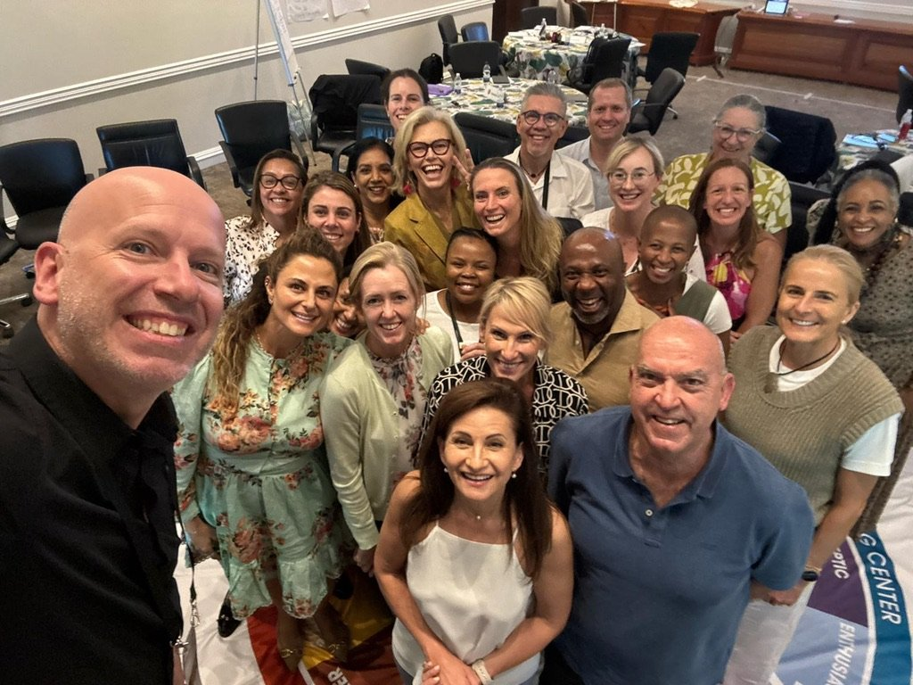
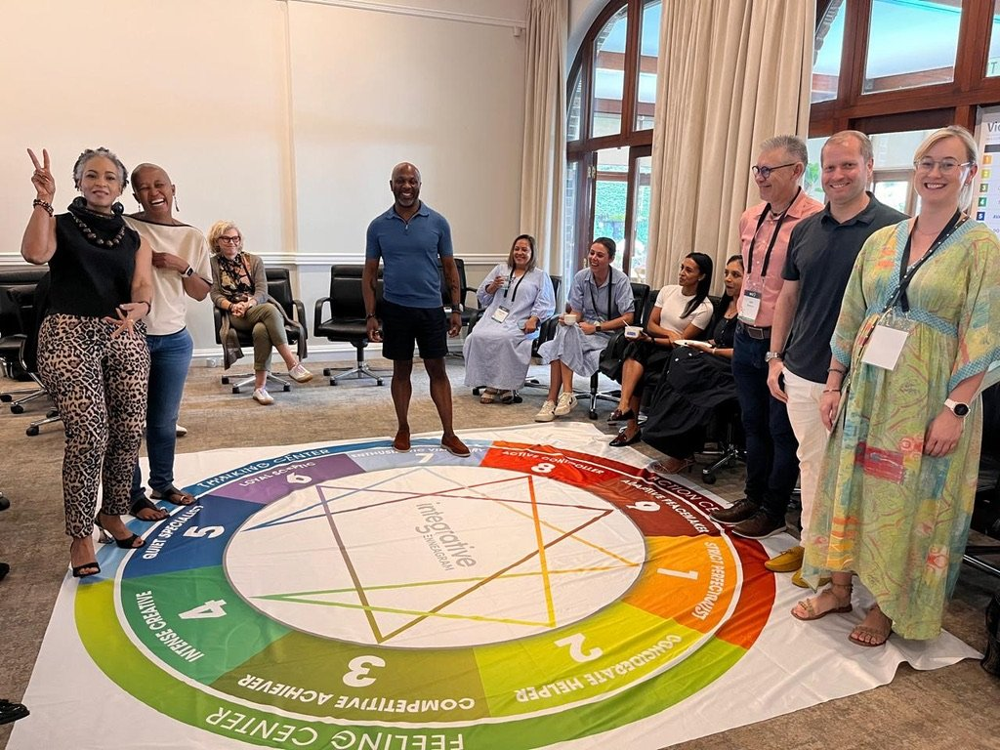
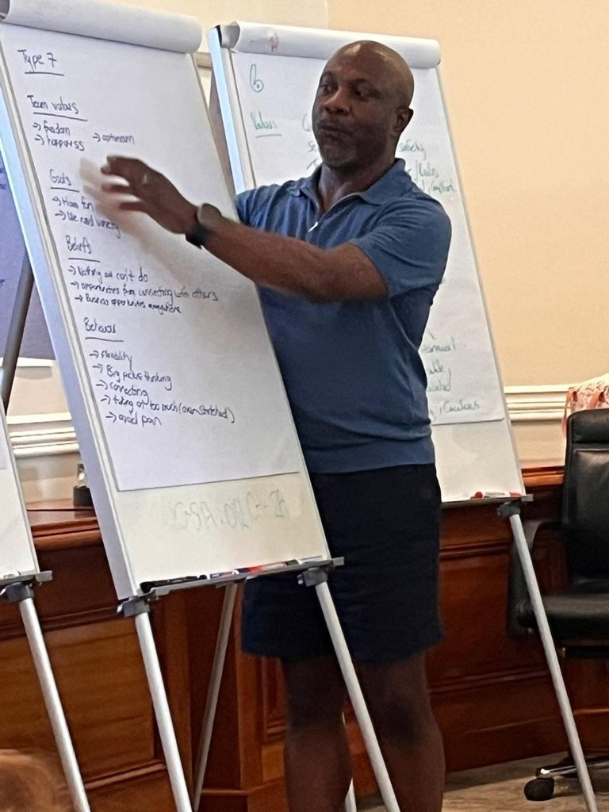
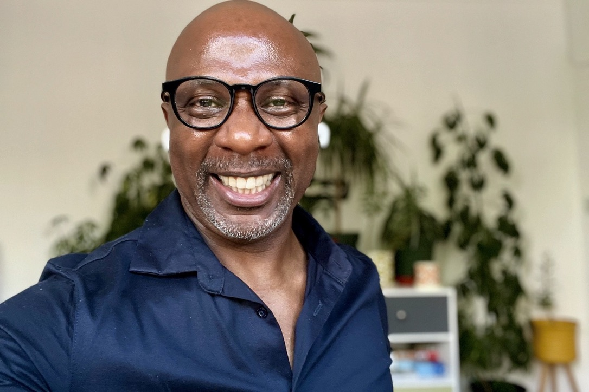

Leadership team coaching for teams carrying real responsibility.
A leadership team can contain capable, experienced people and still struggle to work as a coherent whole.
The difficulty is not always a lack of talent, commitment or expertise. It may be what happens between people: how trust is built, how difference is handled, how decisions are made, which conversations are avoided and how the team responds when pressure rises. Team coaching creates the space for a team to notice these patterns, understand their impact and develop a more effective way of working together.
Based in London, working with leadership teams in person and virtually across the UK.

The team itself becomes the client.
Team coaching is not individual coaching conducted in front of colleagues.
We pay attention to the team as a living system: its relationships, habits, conversations, assumptions, loyalties, tensions and patterns of response. That includes what happens inside the team and the wider organisational system in which it is trying to lead.
Together, we might explore:
- How does this team behave when the pressure rises?
- How are decisions really made?
- Which conversations happen repeatedly without producing movement?
- Which conversations are being avoided altogether?
- Whose perspectives shape the discussion? Whose voices become quieter?
- How does the team use conflict and difference?
- What does the organisation need from this team now?
- What does the team need to become capable of together?
The purpose is not to make everybody think or behave in the same way. It is to help the team become more conscious, more deliberate and more able to use the full range of talent around the table.
A team is more than the sum of its individual profiles.
What matters is not only who each person is. What matters is what happens between them.
Teams usually seek support at moments that matter.
Team coaching may be valuable when:
- A new leadership team is being formed
- A new leader has joined an established team
- The team is carrying greater responsibility or visibility
- Organisational growth has outpaced existing ways of working
- Trust has become fragile
- Conflict is avoided, personalised or repeatedly unresolved
- Capable individuals are operating in silos
- Decisions take too long or fail to create genuine commitment
- Meetings are busy but do not move the important work forward
- Particular voices dominate while others withdraw
- Strategic change requires the team to lead differently
- Relationships have become overly polite, guarded or transactional
- The team is performing adequately but knows another level is possible
Nothing has to be dramatically wrong before a team begins coaching. Sometimes the work starts because a thoughtful team wants to become more intentional before pressure exposes its fault lines.
Recognise your team here?
You do not need to diagnose the team or arrive with a polished brief. Tell me what is happening, what keeps repeating and what you would like to be different. We can explore whether team coaching, facilitation or another form of support would be the most useful starting point.
Team coaching, facilitation and team development are related, but not identical.
A facilitated session helps a group have a particular conversation, reach an outcome or work through an agenda. Training introduces knowledge, models or skills. Team building may help people connect, develop relationships or share an experience.
Team coaching works with the team and its dynamics over time. It pays attention not only to what the team is discussing, but to how the team is operating while it discusses it.
A team-coaching engagement may include facilitated sessions, individual conversations, observation, reflection, experiential work and relevant tools. The defining feature is that these elements serve the development of the team as a collective.
The work should gradually increase the team's ability to notice and change its own patterns, not make it dependent on the coach.
We begin with the real work of the team.
There is no standard programme imposed on every team. The engagement is shaped around the team's purpose, organisational context, relationships, challenges and level of readiness. A typical process may include the following stages.
Discovery and context
I begin with conversations to understand why the work matters now. This may include the team leader, organisational sponsor and selected stakeholders. We explore the context, the team's purpose, what appears to be helping or hindering it and what useful progress might look like.
Contracting with the team
The team needs a shared understanding of the work. Together we agree the purpose, boundaries, responsibilities and practical arrangements. We also clarify confidentiality, how information will be handled and what, if anything, will be shared with an organisational sponsor.
Hearing different perspectives
Depending on the engagement, I may speak individually with team members, observe the team working or use an agreed diagnostic process. These conversations help illuminate different experiences without turning the work into an investigation or presenting the coach as the person with the hidden answer.
Working with what happens in the room
During team sessions, we work with the team's live challenges and the patterns that emerge between people. That may mean slowing down an important conversation, noticing how participation is distributed, exploring what sits underneath a disagreement or helping the team recognise how its habitual responses affect performance.
Experimenting with different choices
Insight matters when it changes how the team works. The team identifies practical experiments: different conversations, decision practices, meeting habits, relationship commitments or ways of responding under pressure.
Review and integration
We return to what the team is experiencing. What has changed? What remains difficult? What is the team now able to notice for itself? What does it need to practise next? The aim is sustainable collective capability rather than temporary improvement during a workshop.
Warmth, challenge and attention to what is happening between people.
I have spent more than two decades coaching, training, facilitating and developing leaders. My work with teams draws on executive coaching, narrative approaches, systemic thinking, the Enneagram, experiential learning and years of holding rooms in which people need to think, participate and have conversations that matter.
I pay attention to:
- What is being said
- What is not yet being said
- The stories shaping the team
- How people respond to one another
- The energy and attention in the room
- Patterns that appear under pressure
- The effect of the wider organisation
- The gap between the team's intentions and its impact
My style is warm, curious and direct. I will not arrive pretending to know more about the team than the people living inside it. Nor will I remain so neutral that useful observations are withheld.
My role is to help the team see more clearly, stay with difficult questions and create choices it could not see before.
Coaching the team with care.
Robert Stephenson is an ICF Professional Certified Coach, executive coach, master facilitator and Enneagram practitioner. His approach to team coaching is informed by the ICF Team Coaching Competencies, including:
- Ethical multi-party contracting
- Treating the team as the client
- Creating trust and psychological safety
- Remaining aware of team dynamics and patterns
- Listening to verbal and non-verbal interaction
- Recognising the influence of the wider organisational system
- Supporting the team to own its dialogue
- Turning collective awareness into sustained action
Team coaching is reflective and demanding work. Robert uses professional reflection and supervision to support the quality and integrity of his practice.
The Enneagram may support the work, but it is not always the starting point.
Where appropriate, the Enneagram can give a leadership team a rich shared language for understanding motivation, communication, conflict, pressure and habitual patterns.
Individual profiles may help team members understand themselves. The deeper team work concerns what happens when those patterns meet.
The Enneagram is never used to put people into boxes, explain away behaviour or turn colleagues into type numbers. It is one possible lens, not a compulsory team-coaching programme.

Does your team need facilitation or team coaching?
A focused facilitated session may be right when the team needs to
- Have one important conversation
- Reach a decision
- Develop a strategy
- Review a particular challenge
- Learn or work through a defined agenda
Team coaching may be more appropriate when
- The same relational or behavioural patterns keep returning
- The team needs sustained development
- Change needs to become part of everyday work
- The challenge concerns how the team operates, not only what it needs to discuss
- The team would benefit from support, experimentation and review over time
Sometimes an initial conversation reveals that another form of support would be more useful. I will say so.
Greater awareness should create greater collective choice.
Every team and engagement is different. Useful outcomes might include:
- More honest and productive conversations
- Clearer collective purpose and priorities
- Greater trust
- Better use of different perspectives
- More effective decision-making
- Reduced siloed working
- Greater responsibility for collective outcomes
- More constructive use of conflict
- Stronger relationships across difference
- Meetings that create movement
- Increased awareness of organisational impact
- Greater confidence during change and uncertainty
- A team that can recognise and work with its own patterns
Work grounded in real leadership settings.
Robert has worked with leaders and groups through coaching, leadership development, facilitation and transformational learning for more than two decades. His experience includes work with leadership programmes, executive groups, organisational teams, coaches and facilitators across a range of sectors and organisational contexts.

“
I have been very fortunate to have had the privilege to listen to international sporting coaches, garnishing their tips, seeking their point of difference and edge. Robert Stephenson is right up there with them all. I have rarely seen connection and delivery like it.
Graeme YoungHead of People Service Delivery, Heathrow
You do not need to diagnose the team before beginning the conversation.
Tell me a little about the team, what is happening and what you would like to be different. We can explore whether team coaching, facilitation, Enneagram work or another form of support would be the most useful starting point. If I believe I can help, I will explain how. If I am not the right person, I will say so.
